🏝️ 菲律宾宿务双轨旅行攻略
🧭 全程地理路线图
地图同时展示跨境航线、岛内陆路与跨岛渡轮。圆形数字是住宿/转场节点；切换到“宿务群岛”后会展开彩色景点标记，点击可查看对应日期、时段和执行条件。
操作：拖动查看区域，使用地图 +/- 或双指缩放，点击数字节点和景点圆点查看时间。景点坐标用于路线定位，现场入口以地图导航和运营方通知为准。
不潜水者怎么走这张地图
D2 以抵达、海岸踩点和潜店确认安排为主；D3 可由向导陪同看沙丁鱼，也可完全不下水，改走 Panagsama 小店与 White Beach；D4 在 Kawasan 认证向导线和 Moalboal 镇区观察线中二选一；D5 你与可能不潜水的小伙伴可共同逛市场、吃本地餐、整理观察和准备转场；D7 鲸鲨可留在船上观察；D10 伙伴潜水时，你走 San Juan 生活区、咖啡访谈和 SPA。所有涉水活动都不单独进行。
Day 1–14 每日路线与时间安排
每一天都按实际执行顺序展开；橙色说明是不潜水替代路线，绿色说明是两人可以共同进行的安排。
05:30–08:00深圳出发，经口岸前往香港机场。
09:25–11:50HKG → MNL；抵达后办入境、取行李和海关。
11:50–16:30马尼拉转机并飞往宿务，国内段抵达后取行李。
18:05–20:00宿务市区入住、晚餐，早休息。
06:30–08:00早餐、退房，到 South Bus Terminal 上车。
08:00–12:35Ceres 巴士到 Moalboal，转 tricycle 去 Panagsama。
13:00–15:30午餐、入住、确认 D3–5 潜水与非潜水安排。
15:30–18:00海岸踩点；不下水就逛海边小店、看日落。
07:00–12:00一起早餐；伙伴 08:30/10:30 两潜。
08:30–11:30你可跟向导看沙丁鱼；完全不下水则走海岸、小店和咖啡。
13:30–17:00你去 White Beach 散步并观察海滩服务。
17:30回 Panagsama 汇合，看日落、吃晚饭。
08:30–12:00伙伴两潜：Pescador + Sardine Run。
A 06:30–13:00你跟认证向导去 Kawasan 峡谷。
B 09:00–13:30或逛 Poblacion 市场、小店并吃本地午餐。
17:00两人回 Panagsama 汇合，不再叠加远途景点。
08:00–09:30自然醒、早餐；最晚此时确认伙伴今天是否潜水。
09:30–11:30若两人都不潜水，一起逛 Poblacion 市场、面包店和小店。
11:30–13:00一起吃本地午餐，交换前几天观察。
13:30–17:00洗衣、打包、确认 D6 车辆；傍晚海岸散步。
08:00–11:30早餐退房，巴士/包车南下，到 Tan-awan 入住。
11:30–13:00本地食堂午餐、短休。
13:30–16:30Tumalog Falls；若关闭则改镇区、海岸与鲸鲨点踩线。
17:00–20:00海边散步，确认 D7 登记点，晚餐早睡。
05:30–07:30起床、登记与简报；06:40 鲸鲨浮潜或船上观察。
07:30–11:30早餐补觉；若 D6 未去，再安排 Tumalog。
14:00–17:30Sumilon 仅在海况和体力允许时参加，否则民宿休息。
18:30晚餐，确认 D8 两段船票与接驳。
07:00–09:30退房到 Liloan Port（Santander），乘当日确认船到 Sibulan Port。
09:30–12:30转到 Dumaguete 港，再乘已出票班次去 Siquijor Port，下船后转 San Juan。
12:30–14:00接送去 San Juan，入住、午餐。
15:00–19:00只选 Balete 或附近海岸；17:30 Paliton 日落。
08:30–10:00Balete Tree 与 Cambugahay Falls。
10:00–13:30Salagdoong 海滩、午餐和休息。
13:30–17:00Lugnason/Kagusuan 二选一；文化交流仅提前引荐时进行。
17:00–18:30Paliton 日落，晚上整理观察笔记。
08:00–11:30伙伴两潜；你跟司机走生活区、市场和小店。
11:30–13:30你整理观察，两人在潜店附近汇合午餐。
14:00–16:30伙伴第 3 潜；你做 Hilot/精油按摩或海边休息。
17:00–21:00一起看日落、吃告别晚餐、准备 D11 船班。
07:00–10:30早餐退房，乘渡轮到 Tagbilaran。
10:30–13:00去 Panglao 入住、海鲜午餐和午休。
14:00–18:30Alona Beach、潜店价格观察、日落；SPA 可选。
19:00–21:00Alona 夜市与海鲜晚餐。
08:30–10:00眼镜猴保护区，按开放时间入场并观察保育与票务。
10:00–13:30转到 Dauis，Bee Farm 午餐并观察农旅、餐饮和零售导流。
13:30–返程前回 Tagbilaran 港；Baclayon 或血盟碑仅在船票时间允许时短停。
按已出票班次Tagbilaran → Cebu Pier 1，抵达后入住宿务市区酒店。
08:00–10:00Carbon Market 与 Taboan，观察传统零售。
10:00–12:00Colon、遗产纪念碑与老城教堂区。
13:30–17:15Ayala/SM 二选一，再到 IT Park；有预约才交流。
18:00–21:00Sugbo Mercado 晚餐，回酒店打包早睡。
04:30–08:35退房去机场，06:55 飞马尼拉。
09:15–13:00准点且行李直挂时，Intramuros 或 BGC 二选一。
13:00–17:50返回 T3，办理国际出境、安检和候机。
17:50–夜间飞香港，抵达后返回深圳。
🧭 这趟旅行的双轨规则
🤿 小伙伴：潜水主线
- 墨宝 D3–4 安排 4 潜，D5 两潜待确认；锡基霍尔 3 潜，均按证书等级与当天海况调整
- 潜水日上午分开行动，潜后保留休息，不临时追加高强度项目
- 每天至少保留一次共同用餐和一次日落/散步时间
🚶 你：在地体验与商业文化观察
- 每地只研究一个主题、最多聊 2 位当地人，避免把旅行变成赶场调研
- 先消费再交流；先问是否方便聊 10 分钟，未经同意不录音、不拍人脸
- 任何浮潜或涉水活动都不单独进行；找向导/同伴，水性一般就穿救生衣
🎒 行前准备与风险预案（首次赴菲必读）
🛂 A. 入境与证件（最优先）
持中国普通护照可免签停留 14 天（旅游/商务），仅限马尼拉(NAIA)和宿务(MCIA)两个口岸入境，不可延期、不可转其他签证。你的路线 HKG→MNL（先清关）→CEB 国内段，在马尼拉 NAIA 先过移民关，符合指定口岸要求 ✓。
入境必备材料清单（缺一可能被盘查/拒入境）：
- 护照有效期 ≥ 6 个月（从抵达日算）+ 至少 1 页空白签证页
- eTravel 注册已完成（etravel.gov.ph ↗），生成二维码，建议出发前 72 小时内填好
- 往返机票行程单（手机存 + 打印），证明 14 天内离境
- 全程酒店订单（至少前几晚，手机存 + 打印）
- 资金证明（信用卡 + 适量美元现金，移民官可能抽查）
- OW / AOW 潜水证书电子版（潜水日使用）
- 护照首页复印件 / 手机存电子版，与原件分开放
📋 入境流程
🚫 海关 / 移民官注意
- 菲政府禁止口岸官员索要小费：遇索贿明确拒绝、保留证据，向菲海关/移民部门举报并联系中国使领馆
- 曾有拒入境 / 不良记录者，赴菲前须先向菲移民局申请资格再审查
- 行程须与“旅游”目的一致，带好订单证明，避免被疑打工/转第三国
💳 B. 资金、支付与通讯
💰 资金与支付
- 国内先换少量美元，到当地换比索（机场汇率差，市区/商场更好）；或用 ATM 取现（带银联/Visa）
- 小店、市场、三轮车只收现金；商场/酒店可刷卡
- Grab 可绑信用卡或现金支付
- 不随身带大量现金，分散存放（一人带一部分）
📱 通讯与必备 APP
- 已购电话卡（127.5 RMB）→ 落地插卡激活，确认流量/通话
- 备选 eSIM（Airalo 等）
- 装好：Grab（打车）、Google Maps（下离线地图）、Maps.me（离线）、翻译 APP
- 两人各自手机都存一份全部订单 + 证件照片
🧳 C. 健康、疫苗与行李
🩺 健康与保险
- 无强制疫苗（黄热仅限来自疫区）；常备：腹泻药、晕船药（渡轮多！）、感冒药、创可贴
- 防晒 SPF50+（reef-safe 近珊瑚）、驱蚊 DEET（登革热全年有）
- 饮水只喝瓶装，勿直饮自来水/冰块
- 潜水保险必买（DAN 或含潜水责任的旅行险）——岛上医疗条件差，重伤需撤至宿务/马尼拉
🎒 行李清单
- 证件：护照、电子/复印件、机票酒店打印、潜水证
- 数码：美标两扁脚转换头(A/B型)、充电宝、防水手机袋
- 潜水：面镜/呼吸管/潜水电脑（自带更省）、毛巾、晾衣绳
- 衣物：速干衣、泳裤、防晒衣(rash guard)、拖鞋、轻便雨衣（台风季！）
✅ 买什么：备一个万能转换插头（含 Type A/B 美标 + USB/Type-C 快充）最省心；若充电器本就是 Type A 两扁脚则可直插、不强制买。避开纯电机类小电器（电吹风/剃须刀），因 50/60Hz 频率差异可能转速异常——选标"100-240V 50/60Hz"的电器更稳。
📱 小红书搜真实产品图：用「菲律宾转换插头」「出国万能转换插头」「美标转换插头推荐」「旅行转换插头测评」等词搜索，看实拍与避坑笔记。
👬 D. 两位男生同行特别提示
- 分工 + 双备份：一人主理证件/eTravel/订单，一人主理现金/支付，但双方手机都备份全套电子版
- 互相拍照存证：护照、签证、酒店、渡轮票，云端 + 各自手机各留一份
- 不要同时“掉线”：一人在水下/船上活动时，另一人留在岸上保管证件与财物
- 夜间避险：避免偏僻路段独行；保守地区注意举止，公共场合避免过度亲昵以免引来不必要的注意
- 遇拦路/索贿：保持礼貌但坚定，不贿赂，记下车牌/制服编号，事后报警或联系领馆
⚠️ 风险预案
🌪️ 自然灾害（台风）
- 你 9/28–10/11 撞上台风季尾巴（6–11月，8–10月最强）
- 你有 3 段跨岛渡轮，恶劣海况可能停航；务必保留 D12 当晚回宿务、D13 留在宿务的缓冲结构，不把返宿务推迟到 D13
- 买含天气取消/行程变更的旅行险；9/18 起关注趋势，出发前 72 小时和每次乘船前查 PAGASA 与船司公告
- 绝不强行出海/上岛
👜 治安 / 扒窃
- 人多处防盗：市场、巴士、码头、jeepney
- 手机不外露，用斜挎包/前袋
- 酒店保险箱存护照与现金
- 摩托车抢手机常见，走路别贴马路举手机
🕵️ 诈骗防范
- 出租车拒打表 → 用 Grab
- 三轮车/岛交先议价（问酒店正常价）
- 假预订/假导游 → 走正规平台
- ATM 在银行/商场内、遮按键防侧录
🚗 交通安全
- 摩托戴头盔、慢行，山路弯多
- 渡轮选 Oceanjet 等正规、查救生衣
- 夜路不骑摩托
- 两人别同乘一辆无牌车
🤿 涉水 / 潜水
- 仅用 PADI/SSI 认证潜店
- 不超证，买潜保，不单独潜水
- 浮潜穿救生衣
- 鲸鲨互动禁涂防晒霜
🏥 健康医疗
- 岛医条件基本，重伤靠撤离
- 带常用药，防登革/狂犬病（勿逗野狗）
- 饮水只喝瓶装
- 买含医疗撤离的保险
⚖️ 法律禁忌
- 严禁毒品（重罚）
- 远离黄、赌
- 不替陌生人带物/寄递
- 政治敏感话题少谈
🗺️ 区域安全
- 你去的宿务/薄荷/锡基霍尔属中部Visayas，旅游区较安全 ✓
- 避开：西棉兰老、苏禄群岛、马拉维（不在你路线）
- 遇突发，按下方紧急联络求助
| 菲律宾报警急救 | 911 |
| 红十字会急救 | 143 |
| 中国驻菲使馆（马尼拉） | 0063-2-82311033 |
| 中国驻宿务总领馆 | 0063-32-3430008 |
| 外交部全球领保（24h） | 0086-10-12308 / 0086-10-65612308 |
🗺️ 行程总览
| 日期 | 目的地 | 主题 | 住宿 |
|---|---|---|---|
| D1 9/28 | 深圳→香港→马尼拉→宿务市区 | 交通日 | 宿务市区·近南巴士站 |
| D2 9/29 | 宿务 → 墨宝 Moalboal | 移动+适应 | Moalboal (3晚) |
| D3 9/30 | 墨宝 Moalboal | 潜水日 | Neptune Diving Resort |
| D4 10/01 | 墨宝 Moalboal | 潜水日 | Neptune Diving Resort |
| D5 10/02 | 墨宝 Moalboal | 共同陆地 / 潜水待定 | Neptune Diving Resort |
| D6 10/03 | 墨宝 → 奥斯洛布 Oslob | 观鲸鲨+瀑布 | Oslob (1晚) |
| D7 10/04 | 奥斯洛布 Oslob | 鲸鲨+Tumalog Falls | Oslob (或直接离岛) |
| D8 10/05 | Oslob → 锡基霍尔 Siquijor | 渡轮+环岛 | Siquijor (3晚) |
| D9 10/06 | 锡基霍尔 Siquijor | 环岛游 | Siquijor |
| D10 10/07 | 锡基霍尔 Siquijor | 潜水日 3潜 / 你做SPA | Siquijor |
| D11 10/08 | 锡基霍尔 → 薄荷 Bohol | 渡轮 | Panglao·住 1 晚 |
| D12 10/09 | 薄荷 Bohol → 宿务 Cebu | 商业观察+返程 | 宿务市区酒店 |
| D13 10/10 | 宿务 Cebu | 宿务市区 | Cebu 市区酒店 |
| D14 10/11 | 宿务→马尼拉(中转9h)→香港 | 返程+马尼拉半日游 | -- |
📋 每日详细行程
✈️ 去程航班详情（宿务航空 Cebu Pacific Air）
| 09:25 | 香港 T2 HKG | 🛫 5J273 宿务航空 | 经济舱 | 无餐 | 2h25m |
| 11:50 | 马尼拉 T3 MNL | ⏳ 中转 3h10m — 需重新托运行李！ |
| 15:00 | 马尼拉 T3 MNL | 🛫 5J581 宿务航空 | 空客321中 | 经济舱 | 无餐 | 1h30m |
| 16:30 | 宿务 T1 CEB | 🏁 国内段抵达麦克坦-宿务国际机场（已在马尼拉完成入境） |
🏨 住宿怎么选（直接决定 D2 去墨宝顺不顺）
核心逻辑：D2 一早要从 Cebu South Bus Terminal（南巴士站） 坐 Ceres 巴士去墨宝（约 4h）。所以 Day 1 住宿务市区、紧挨南巴士站最省心——D2 打车 10-15min 直达，不用过桥进城。若住 Mactan 机场岛，D2 要过桥 45-60min，得 05:30 起床，缓冲差，不推荐。
| 推荐 | 酒店 | 价格/晚 | 评分 & 位置 | 为什么适合你们 |
| ⭐首选 | Pacific Pensionne ↗ | ≈$22 ≈160 RMB |
8.1 分 4200+ 评 步行到南巴士站 |
住客评价明确提到"near South bus terminal if heading to Oslob/Moalboal"——正是你们路线；近圣婴教堂、麦哲伦十字架、Taboan 市场买伴手礼。预算友好、干净。 |
| 舒适升级 | One Central Hotel ↗ | ≈$40 ≈290 RMB |
8.6 分 8000+ 评 步行到南巴士站 |
有泳池+健身+24h 前台，房间大，适合想落地泡个泳池放松的两人。位置同样贴南巴士站。 |
| 特色 Heritage | Palm Grass Hotel ↗ | ≈$35 ≈255 RMB |
8.1 分 2700+ 评 近南巴士站 |
本地 Heritage 风格设计酒店，有泳池，文艺男生会喜欢，离南巴士站约 1km。 |
| 落地轻松备选 | Mactan 机场酒店 ↗ （如 Goldberry / BAI 等） |
≈$30-50 | 机场 5-10min | ⚠️ 仅当 D1 太累不想过桥时选；D2 需 05:30 起床过桥进城到南巴士站，缓冲差，不推荐。 |
💡 价格随季节浮动，以 Agoda/Booking 实时为准；两人一间，按"每间房/晚"计。建议订 可免费取消 的房型，台风季行程有变可退。
🗺️ Day 1 路线 · 实景 · 指引
机场 → 过桥 → 市区酒店 → 晚饭 → 玩，一图看懂空间关系与流程（下方实景照片为维基共享资源真实授权图；想看成片风格的小红书实拍，可 点此在你自己设备的小红书搜「宿务」↗）
① 交通路线图（机场 → 市区）
② 真实场景参考（实景照片 · 来源 Wikimedia Commons，CC 授权）


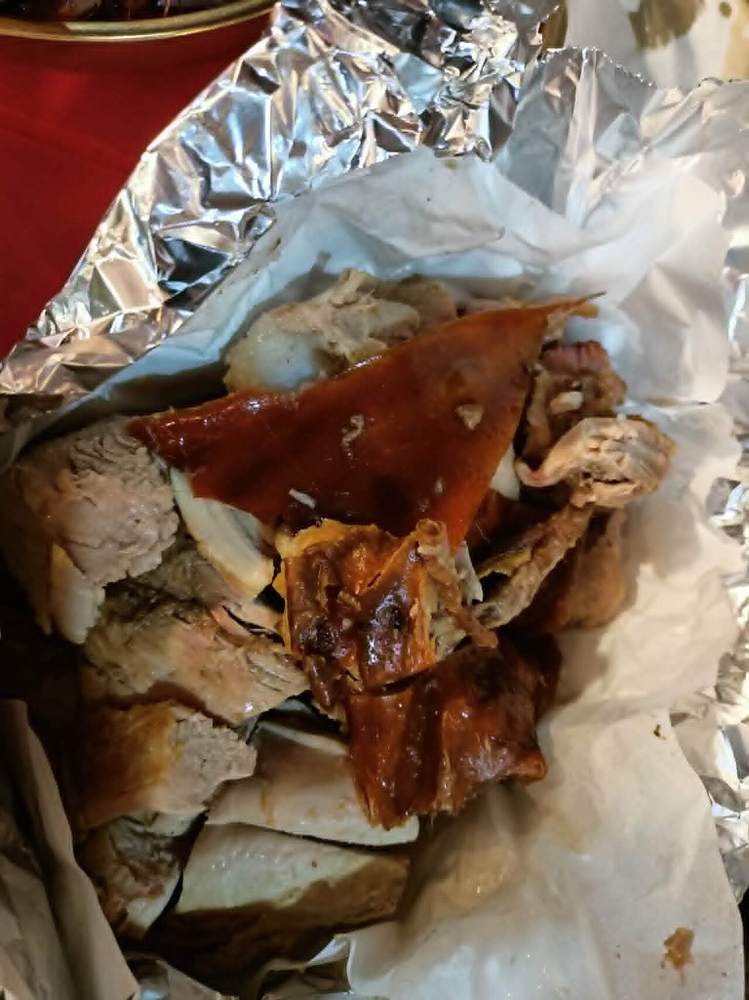
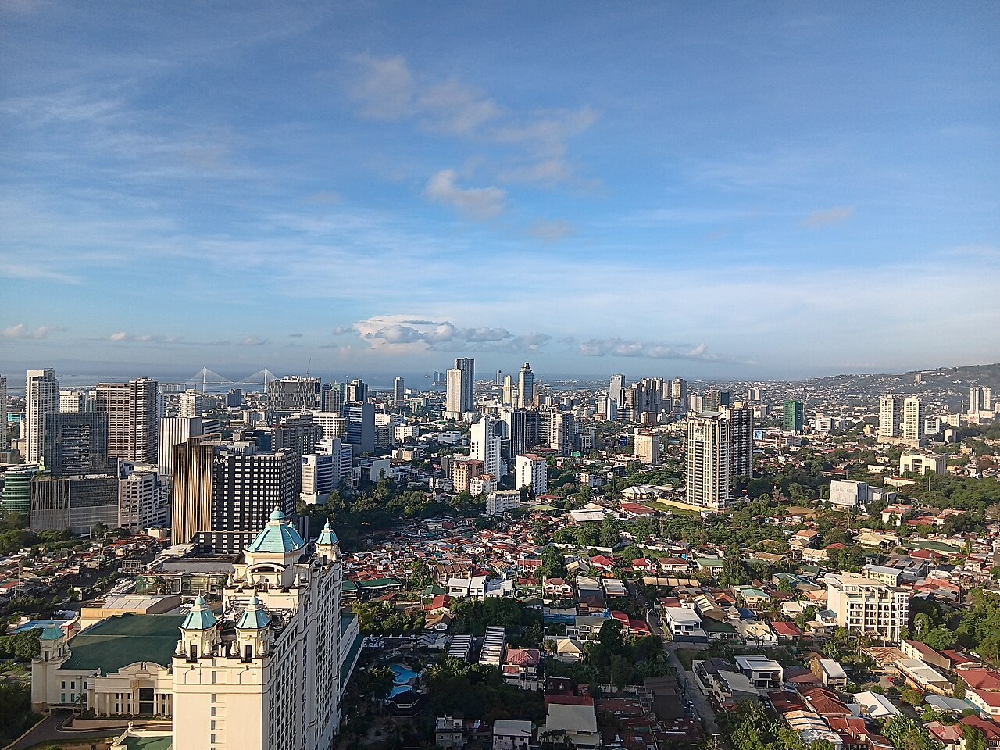
📌 说明：本想用浏览器在登录态下抓小红书「宿务」实拍，但实测小红书直接拦截了本机运行 IP（报错 error_code=300012 IP存在风险，连登录页都进不去），故无法从这边抓取。上方改为维基共享资源中的真实授权照片。你可在自己设备点 小红书搜「宿务」↗ 看博主实拍；若把具体笔记链接发我，我可代为抓取图片备份进 images/day1/real/ 同一目录并嵌入本页。
③ 入境流程指示
④ Grab 叫车步骤（机场 → 酒店）
同一订单通常已有两段登机牌，但入境菲律宾仍须在首个入境机场提取行李过海关。3h10m 属可行但不宽裕的衔接，不在机场停留吃正餐。
建议用 Grab App 叫车，价格透明可绑卡；避开航站楼"拉客司机"私下议价。
住市区近南巴士站，D2 早上打车 10-15min 即到 South Bus Terminal 坐去墨宝的 Ceres 巴士。
🎯 Day 1 晚上玩什么（3 选 1，D2 要早起建议别太嗨）
① 轻松逛吃（推荐 ⭐）：SM City Cebu / Robinson's Place（市中心，打车 10min）。吹空调、换汇、买水、激活电话卡，楼下大食代吃顿菲律宾快餐，21:30 前回酒店。
② 夜景晚餐：打车去 Top of Cebu 山顶餐厅，俯瞰全城夜景 + 吃烤乳猪，氛围好；约 22:00 回，注意打车安全（用 Grab，记车牌）。
③ 老城夜游（谨慎）：Colon Street 老城区夜市感强，但夜晚人流杂、扒手多，两人同行、手机挂绳、不露富，23:00 前回。新手首晚不建议。
🚌 去墨宝交通详情（Ceres Liner 黄色巴士）
| 出发地 | Cebu South Bus Terminal（N. Bacalso Ave，市区南巴士总站，紧挨 Day1 酒店） |
| 坐哪班 | ⚠️ 认准 "Bato via Barili" / "Badian" / "Moalboal" 字样 不要上 "via Oslob" 的车！那是去奥斯洛布方向，绕远且不顺路 |
| 票价 | 非空调 ≈170 PHP / 空调 ≈210 PHP（每 30–60 分钟一班，首班 ~03:00、末班 ~18:30–22:00） |
| 车程 | 约 3.5–4.5 小时（≈95km，沿海公路经 Carcar / Barili） |
| 到镇后 | 在 Moalboal 镇(Poblacion) 主路 Jollibee 附近下车 → 转 tricycle 摩托三轮 到 Panagsama Beach（≈3.5km / 10–15min，包车 ≈150–200 PHP，拼车每人 ≈50 PHP） |
🏨 住宿怎么选（兼顾 D3–4 潜水与 D5 两人共同陆地线）
核心逻辑：小伙伴 D3–4 的 4 潜与 D5 待确认潜水都从 Neptune Diving Resort 周边出发，且沙丁鱼风暴、跳崖都在 Panagsama Beach（Basdiot）。所以 住 Panagsama 最省心——下楼即海、潜店就在门口，不用每天往返 White Beach。White Beach（Basdaku）沙子更白更安静，但要坐 tricycle 进出，潜水日不方便，不推荐作为潜水日住宿基地。
| 推荐 | 酒店 | 价格/晚 | 评分 & 位置 | 为什么适合你们 |
| ⭐首选 （潜店同款） |
Neptune Diving Resort ↗ | ≈$40-50 ≈290-360 RMB |
8.7 分 48+ 评 Panagsama 沙滩 |
就在 Panagsama 沙滩、沙丁鱼风暴入口仅 10m，自带潜店（D3–4 固定 4 潜，D5 再决定是否加潜）。下楼即海。⚠️ 隔音一般（邻鸡舍 + 酒吧音乐），建议带耳塞。 |
| 最佳口碑 （预算） |
Garden Village Resort ↗ | ≈£34 ≈310 RMB |
近 2000 评 带泳池花园 |
位于 Panagsama Road、Poblacion West，花园 + 泳池。到 Panagsama 潜店区约 2.4km，建议短程车；不要按“步行几分钟到沙滩”安排行李和潜水衔接。 |
| 安静文艺 | Herbs Guest House ↗ | ≈£21 ≈190 RMB |
209 评 近海有餐厅 |
位于 Tongo Point Road，安静并带餐厅；到 Panagsama 主潜店区约 20–30 分钟步行，或搭短程车。适合想观察当地生活、又不要求下楼就是潜店的住法。 |
| 临海看龟 | Sea Turtle House ↗ | ≈£32 ≈290 RMB |
50 评 空调房 |
White Beach Looc、Barangay Saavedra 临海，不在 Panagsama。适合安静看海和海龟，不适合作为 D3–4 潜水日的就近住宿；去 Neptune / 沙丁鱼点需另安排车辆。 |
💡 原估算「酒店 ≈236 RMB/晚」偏低；Neptune 实时约 290-360 RMB。价格随季节浮动，以 Booking/Agoda 实时为准；建议订 可免费取消 房型（台风季有变可退）。若选择 Sea Turtle House，需把它视为 White Beach 住宿并单独安排去 Panagsama 的交通。
🗺️ Day 2 路线 · 实景 · 指引
市区酒店 → 南巴士站 → 4h 巴士 → 墨宝镇转 tricycle → Panagsama Beach，一图看懂空间关系（实景照片为维基共享资源真实授权图）
① 交通路线图（宿务市区 → 墨宝）
② 真实场景参考（实景照片 · 来源 Wikimedia Commons，CC 授权）


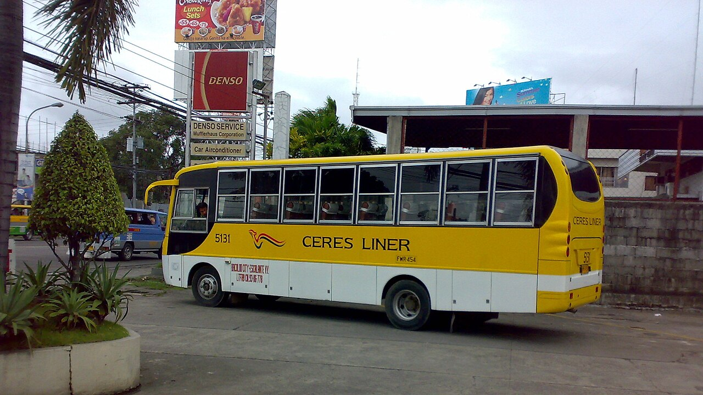

📌 说明：上方为维基共享资源真实授权照片（沙丁鱼风暴 / Panagsama 沙滩 / Ceres 巴士 / Pescador 岛）。想看博主实拍可 点此在你自己设备的小红书搜「墨宝 宿务」↗；本机 IP 被小红书风控拦截（error 300012），无法从这边抓取。
③ 巴士乘车流程指示
④ 沙丁鱼风暴浮潜步骤（岸边即可，不用船）
Day1 酒店选在市区近南巴士站的意义就在这：几分钟就到。
车上建议：备零食 + 水（非每站都停餐厅）、空调偏冷带薄外套、下载离线地图、可补觉。沿途是菲式乡村海岸风光。
把酒店名给司机看，Panagsama 路窄弯多，确认送到潜店门口。
下午水况也清晰，但清晨人更少；今日先踩点，D3 起连续潜水。
🎯 Day 2 晚上玩什么（3 选 1，明天开始潜水建议别太嗨）
① 沙滩酒吧看日落小酌（推荐 ⭐）：Panagsama 有几家临海酒吧（Chilli Bar / Survivors 等），Happy Hour 喝一杯听海浪，22:00 前回。
② 海边夜市小吃：沿街烤海鲜、炸物、水果冰沙，边走边吃，感受背包客小镇夜生活。
③ 早休（最推荐给潜水日）：D3 一早潜水，21:30 前睡，保存体力。
🏆 潜店：Neptune Diving Resort Moalboal（两人同住，小伙伴在此潜水）
💰 小伙伴 · 4 潜基础 / 6 潜备选报价
| 项目 | 价格（PHP） | ≈ RMB | 说明 |
|---|---|---|---|
| 6 Dive Package（含装备租赁） | ₱7,200 | ≈ ¥783 | 含全套装备 + 海洋公园费 + 潜导 + 气瓶 + 配重 仅限岸潜+船潜（夜潜/高氧另计） |
| 6 Dive Package（自带装备） | ₱6,600 | ≈ ¥717 | 其他同上，省掉装备租费 |
| 单次岸潜（含装备） | ₱1,400 | ≈ ¥152 | House Reef 岸潜 |
| 单次船潜（含装备） | ₱1,600 | ≈ ¥174 | Pescador Island 等外岛潜点 |
| 夜潜（含装备） | ₱1,800 | ≈ ¥196 | 含水下灯，House Reef 夜潜找青蛙鱼 |
| 📌 D3–4 先订 4 潜；D5 两潜待确认。4 潜没有在此锁定套餐价，应直接问潜店定制报价、最晚加潜时间和取消规则。若最终潜满 6 次，再比较 ₱7,200 套餐是否更划算。价格均需出发前复核。 | |||
🗺️ 墨宝核心潜点一览（D3–4 固定，D5 待确认）
| 潜点名称 | 深度 | 难度 | 方式 | 看点 |
|---|---|---|---|---|
| Sardine Run 沙丁鱼风暴 | 1–20m | 所有级别 | 岸潜 ⭐ | 百万沙丁鱼球 + 杰克鱼/鲭鱼捕猎 + 偶遇长尾鲨 |
| Pescador Island 佩斯卡多尔岛 | 5–65m | OW+ | 船 10-15min | ⭐Cathedral Cave 大教堂洞穴(28m→18m) + 450+种硬珊瑚 + 白尖礁鲨 + 海龟 + 梭鱼群 |
| Kasai Wall 卡赛墙 | 5–40m | OW+ | 岸/船 | 垂直峭壁 + 140m 洞穴系统 + 软珊瑚/海扇 + 青蛙鱼 + 裸鳃亚目 |
| Tongo Point 通戈角保护区 | 5–55m | OW+ | 船 | 海洋保护区 + 健康珊瑚 + 小洞穴 + 海龟常驻 |
| House Reef (Panagsama) | 3–50m+ | 所有级别 | 岸潜 | 夜潜首选！青蛙鱼 + 裸鳃 + 螳螂虾 + 海蛇 + 无限岸潜权限 |
| Airplane Wreck 飞机残骸 | 20–22m | AOW | 船 | 90年代沉没的 Cessna 双座飞机 + 人工礁石 + 成群鱼环绕 |
📋 双轨总览（每天对照）
| 日期 | 🤿 小伙伴（潜水） | 🚶 你（不潜水） |
|---|---|---|
| Day 3 9/30 | 2 潜：House Reef 热身 + Pescador Cathedral Cave | 向导陪同沙丁鱼浮潜（可选）+ White Beach + 旅游服务定价观察 |
| Day 4 10/1 | 2 潜：Pescador 深入 + Sardine Run 沙丁鱼球 | Kawasan 认证向导线 / 墨宝镇区文化商业线（二选一） |
| Day 5 10/2 | 待确认：2 潜，或不潜水并加入两人共同陆地线 | 两人共同慢走市场 + 本地午餐 + 打包；若伙伴潜水，你单独执行 |
💡 左蓝=小伙伴潜水轨，右橙=你不潜水轨。两人住同一酒店，上午分头行动、傍晚汇合吃饭。
📸 潜水实景参考（维基共享资源 CC 授权）
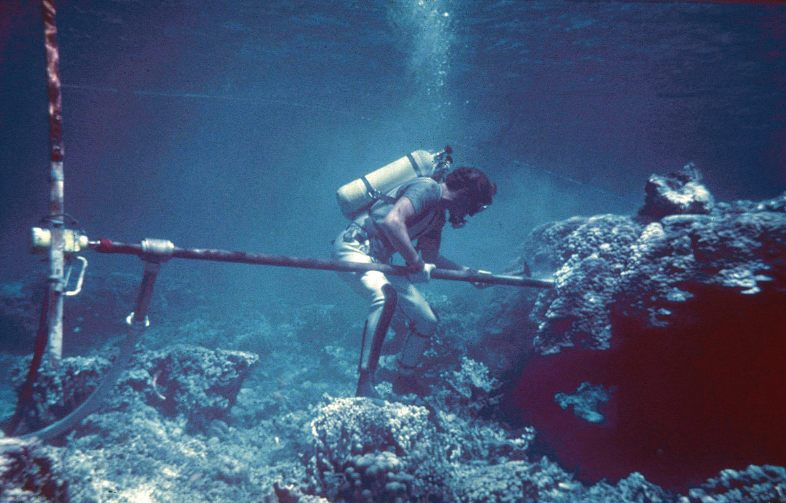
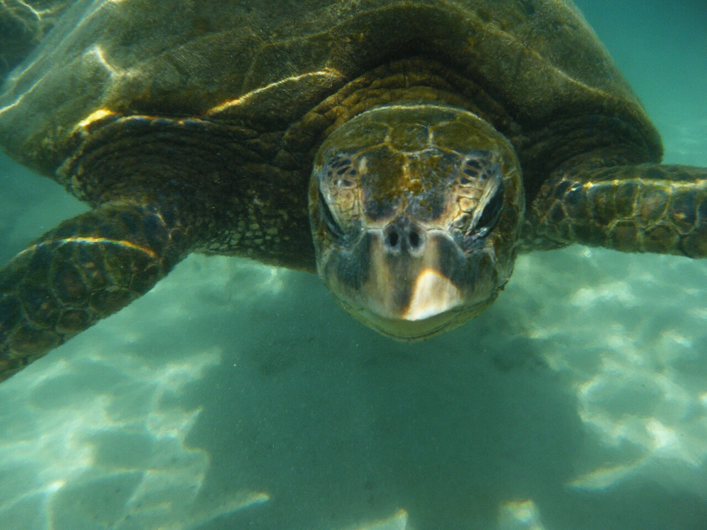


🗓️ 逐日双轨对照
🤿 小伙伴 · 潜水 2 潜
🚶 你 · 不潜水版

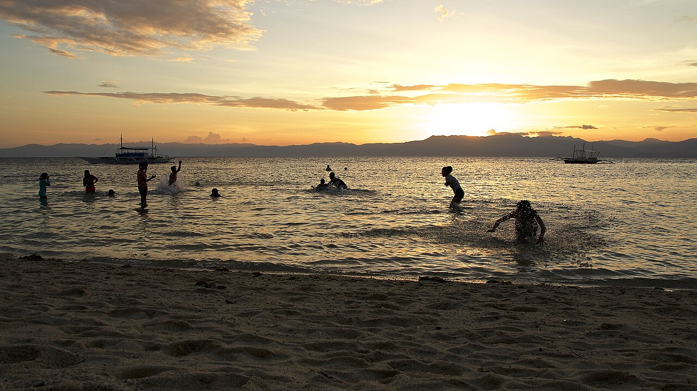
🤿 小伙伴 · 潜水 2 潜
🚶 你 · Kawasan 探险 / 镇区观察（二选一）
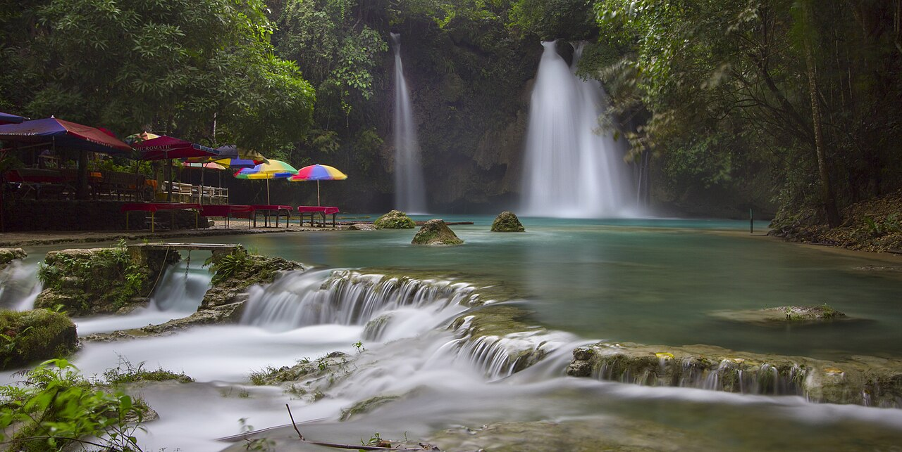
⚠️ 10/1 国庆人多；雨季有封谷风险 → 行前一天查 "Breathtaking Badian" 官方 FB；经潜店订 LGU 认证向导（₱1,500 统价含向导装备午餐）。
🤿 小伙伴 · 方案 A：确认后再加 2 潜
🚶 方案 B：你 + 可能不潜水的小伙伴共同陆地线
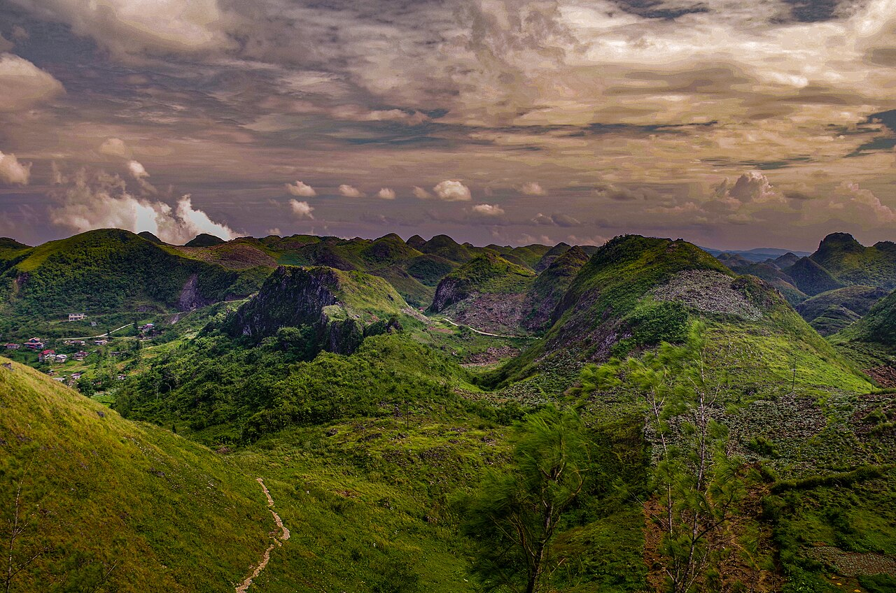
Osmeña Peak 日出仅作为体力型备选：需 03:00 起床并提前订可靠司机；若执行，就取消当天市场走访，下午必须补觉。
📌 Day 5（10/02）收尾 · 衔接 D6 奥斯洛布
- 小伙伴 Day 5 可能不潜水：默认先保留“两人共同陆地线”；最迟 D4 晚上向潜店确认是否加入 D5 两潜以及取消/改价规则
- 墨宝最后一个完整活动日，D6 一早出发去奥斯洛布（约 1.5-2h 巴士/包车）——两人都记得在 D5 下午前收拾好行李
- 小伙伴若选夜潜，当天改为：上午 1 潜 → 午餐 → 休息/打包 → 17:30 夜潜 Briefing → 18:00-19:00 夜潜
- 你默认走慢节奏市场与经营观察线；只有非常想看日出且天气稳定时才改走 Osmeña Peak，二者不要叠加
- 若两人都无 AOW 证，Airplane Wreck 去不了，小伙伴 Dive 6 改二次 Kasai 或加一次 Sardine Run
- D5 晚上把 D6 交通安排好，可请酒店前台叫车或查 Ceres 巴士时刻
① 永远跟住潜导——Pescador 有下降流，独自离队极危险 | ② 严格控深度和时间 | ③ 水面休息 ≥1h——两潜间必须排氮 | ④ 潜后 24h 不坐飞机/高山（你们 D6 坐巴士无此问题）| ⑤ 不涂防晒霜下水——用 rash guard 代替 | ⑥ 不触碰海洋生物 | ⑦ 多喝水少喝酒
🚌 墨宝 → 奥斯洛布 交通详情
| 方案 A 巴士 | 在 Panagsama 路口拦 Ceres 黄色巴士（Bato / Oslob 方向），约 2–2.5h，票价 ≈80–120 PHP/人；在 Oslob / Tan-awan 下车。慢但便宜，沿途看乡镇风景。 |
| 方案 B 包车 | 两人包一辆 van / 找潜店拼车，约 1.5–2h，摊下来 ≈800–1200 PHP/车。省时、行李不用搬来搬去，推荐两人出行用。 |
| 路况 | 沿海山路 + 乡镇穿行，晕车备药；途经 Bato 是去 Siquijor 的渡轮码头所在地（D8 会用到）。 |
| 到后 | 入住 Tan-awan 或 Oslob 镇酒店 → 下午可先去 Tumalog Falls 或海边踩点，为 D7 鲸鲨养精蓄锐。 |
🏨 住宿怎么选（奥斯洛布住哪，决定 D7 看鲸鲨顺不顺）
核心逻辑：鲸鲨观览点 Tan-awan 在 Oslob 镇以北约 10km。想赶 第一批 6:00 船，住 Tan-awan 海边 最省心（下楼即码头）；住 Oslob 镇则要多 15–20min 车程。D6 只是中转过夜，预算友好 + 干净 即可。
| 推荐 | 酒店 | 价格/晚 | 位置 | 为什么适合你们 |
| ⭐首选 | Tan-awan 区域住宿建议 ↗ 需自行选择具体酒店 |
≈$25–35 ≈180–250 RMB |
紧挨鲸鲨码头 | 步行到观鲸点，D7 可直接睡到 5:30 起床；多为家庭经营，可顺带聊本地旅游生意（商业观察切入点）。 |
| 舒适升级 | Oslob 区域度假村建议 ↗ 需自行选择具体酒店 |
≈$40–60 ≈290–430 RMB |
带泳池 / 花园 | 想落地泡泳池放松两天选它；多数有接送码头服务。 |
| Sumilon 跳岛 | Sumilon 岛度假村 ↗ | ≈$120+ 高端 |
私人白沙岛 | 蓝水沙洲 + 绝美沙滩；D7 看完鲸鲨可顺去。预算高、想体验"菲律宾海岛度假天花板"的选它。 |
💡 价格随季节浮动，以 Booking/Agoda 实时为准；建议订 可免费取消 房型。
🗺️ Day 6 路线 · 实景 · 指引
墨宝下撤 → 沿西南海岸南下 → 奥斯洛布，一图看懂空间关系（实景照片为维基共享资源真实授权图）
① 路线示意（宿务岛南段）
② 真实场景参考（实景照片 · 来源 Wikimedia Commons，CC 授权）
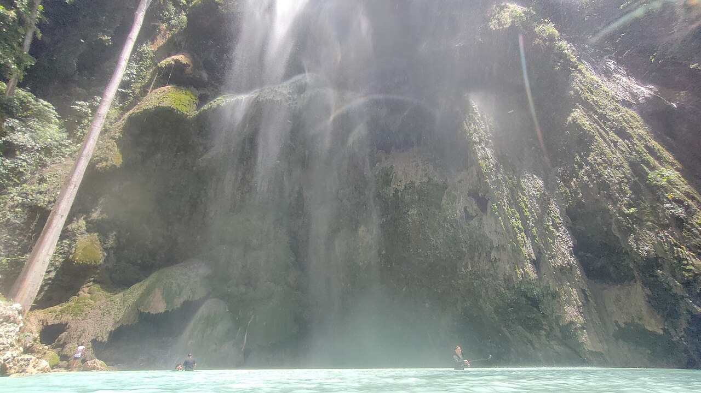

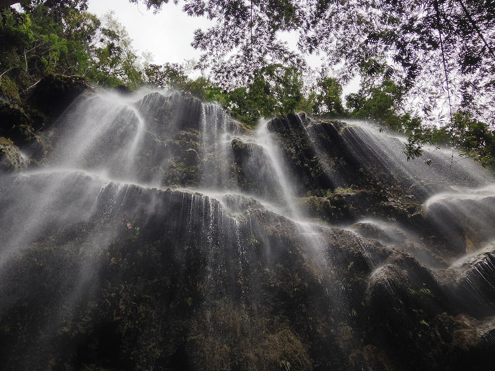
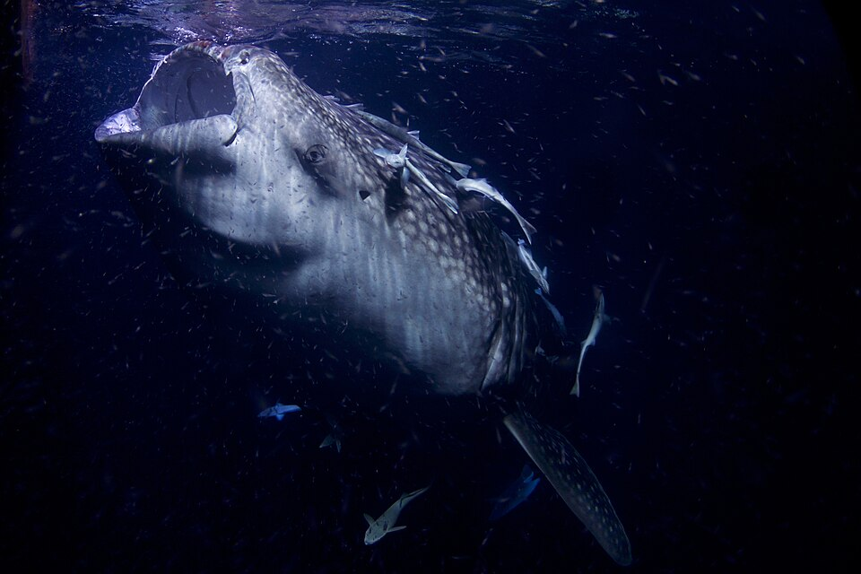
🎯 Day 6 晚上玩什么（奥斯洛布是小镇，夜晚很安静）
① 民宿天台看星（推荐 ⭐）：南纬小岛光污染少，天气好能看到银河；两人吹海风聊行程，给 D7 蓄力。
② 镇上夜市小吃：Oslob 主街晚上有零星烧烤摊（ihaw-ihaw），尝试烤香蕉 / 烤鸡翅，便宜接地气。
③ 商业观察夜谈：入住后先正常消费并询问老板是否方便聊 10 分钟，了解旺淡季、预订渠道和天气取消带来的经营压力；不直接追问精确营业额或私人收入。
④ 提前预约：若还没订 D7 鲸鲨 + D8 去 Siquijor 的车船联运，今晚用 Grab / 民宿前台一并敲定。
🐋 Oslob 鲸鲨观览 · 必读（2026 实测）
| 时间 | 6:00–12:00（官方时段，过午停摆）。最佳 6:00–8:00 第一批，人少、鲨近、光线好。 |
| 票价 | 外国人浮潜观鲨 ≈1,000 PHP/人；+ 租用浮潜面罩/脚蹼 ≈200–300 PHP；仅观看（不下水）更便宜。 |
| 流程 | 登记 → 听简报（禁防晒霜下水、禁触碰、保持距离）→ 分批上小螃蟹船（banca）→ 工作人员投喂吸引鲸鲨，游客在船边浮潜观察约 30min。 |
| 伦理 | ⚠️ Oslob 是"每日投喂"模式，动物保护界有争议（改变鲸鲨自然行为）。介意者可选 D3-5 墨宝 沙丁鱼风暴 等纯野生体验；或只看不喂。尊重当地社区生计选择即可。 |
| 装备 | GoPro / 防水袋必备；物理防晒衣替代防晒霜（保护珊瑚）。两人可共用一台水下相机。 |
🗺️ Day 7 实景 · 指引
鲸鲨、瀑布、小岛，一图建立视觉预期（实景照片为维基共享资源真实授权图）
🚢 奥斯洛布 → 锡基霍尔 渡轮详情
| 路线 | 从 Oslob 南行到 Liloan Port（Santander）（约 30–45min），搭 Maayo Shipping 渡轮 到 Sibulan Port，转 tricycle 到 Dumaguete 港，再换已出票的快船到 Siquijor Port，最后乘酒店接送或带司机车辆去 San Juan。船班和港口入口按运营方当天通知确认。 |
| 直达方案 | ⚠️ 注意：宿务南端没有直达锡基霍尔的快艇。冷门直达仅有 Maayo Shipping RORO 慢船（Bato/Liloan → Larena 港），约 3h，₱275，每周仅几天、多凌晨发船，班次不稳、不建议依赖。（原攻略误写的"08:20 / 14:30 发船"是锡基霍尔→薄荷的船，非本段。） |
| 联运 | 也可在 Oslob 报"车 + 船联运"一日通，司机送你到码头、含船票，省心但贵 30–50%。 |
| 到后 | 抵达 Siquijor，入住 San Juan（连住 3 晚：10/5、10/6、10/7）。优先请民宿安排码头接送和次日司机；自驾仅在证件与保险合规时选择。 |
🏨 锡基霍尔住宿怎么选（连住 3 晚，重在环岛方便）
核心逻辑：住 San Juan（西北海岸） 最方便——沙滩、潜店、餐厅和日落集中在这侧。环岛优先选择带司机的 tricycle / 小车，能聊天、少看导航也更安全；若确认证件、摩托车型权限和保险均有效，再考虑自驾。
| 推荐 | 酒店 | 价格/晚 | 位置 | 为什么适合你们 |
| ⭐首选 | San Juan 海边民宿 ↗ | ≈$20–30 ≈145–215 RMB |
Paliton/Sandugan 沙滩 | 下楼即白沙日落沙滩，餐厅潜店步行可达，两人骑行环岛基地。预算友好、氛围松弛。 |
| 设计感 | 雨林/泳池度假村 ↗ | ≈$40–70 ≈290–500 RMB |
带泳池花园 | 想泡泳池、丛林感的两人选；多数含接送码头。 |
💡 价格随季节浮动；连住 3 晚建议订 可免费取消 房型。下岛后先确认酒店接送/次日司机并准备现金（岛上 ATM 较少）。
🗺️ Day 8 路线 · 实景
南端渡轮跨海 → 神秘之岛 Siquijor（实景照片为维基共享资源真实授权图）

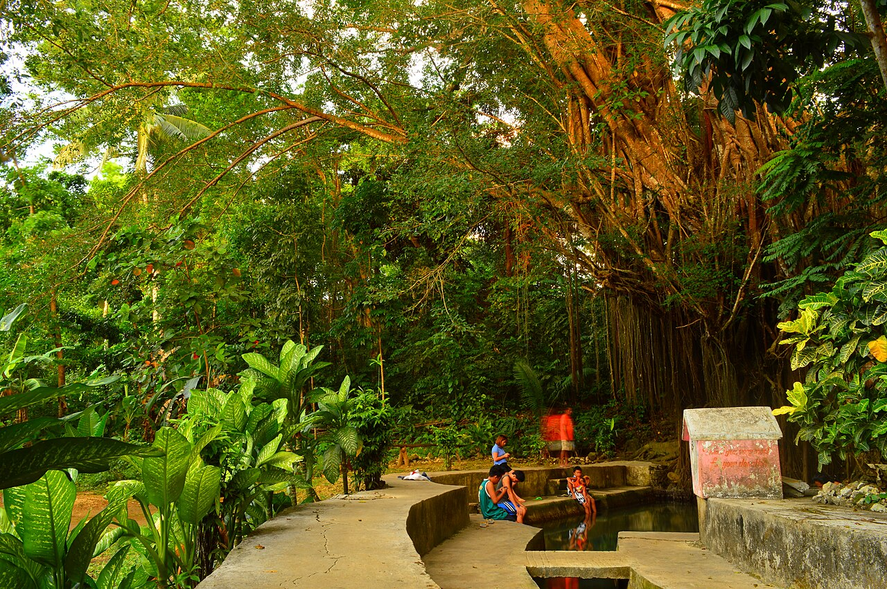


锡基霍尔被称为"神秘之岛"，以 folklore（bolo-bolo 疗愈）、自然环境与慢生活闻名。今天用带司机的 tricycle / 小车走主要点位，边走边理解当地生活；若证件和保险都合规才自驾摩托。山路弯道多，天黑前结束远途移动。
🗺️ Day 9 环岛路线 · 实景
San Juan → 北端灯塔 → 东岸 Salagdoong → 南 Cambugahay → 回（实景照片为维基共享资源真实授权图）
🤿 小伙伴 · 潜水线（Ustory Divers / Three Dives）
📍 Tubod Fish Sanctuary：家门口礁区，海龟、软珊瑚、jack 鱼群。
📍 Tubod Wall：壁潜，看大型鱼群与陡降地形。
📍 Micro Wall：微距天堂（海兔、虾蟹、瓷蟹）。
💰 Three Dives 套餐约 564 RMB；清晨可能偶遇鲸鲨路过！
🚶 你 · 在地探索线
① 生活区慢行：请民宿安排司机/向导，去 San Juan 生活区、市场或椰子产品小店，不临时闯入私人作坊。
② 岛上经营观察：只选民宿、司机、小店中的 1–2 位交流，了解船运、旺淡季、现金/电子支付和平台获客。
③ 海边休息：Paliton / Sandugan 散步、读书；想浮潜必须通过潜店找向导/同伴，不单独下水。
④ 按摩 SPA（重点）：下午安排 1.5h Hilot / 精油按摩，给自己留真正放松的半天。
💆 按摩 / SPA 推荐 & 哪天做最合适
菲律宾按摩分三档：路边 beach spa / 小店（便宜）、度假村 SPA（环境好）、传统 Hilot（草药热敷 + 关节复位，本地人最爱）。男生两人都合适，别害羞。
✅ 首选：Day 10（锡基霍尔）
岛上 beach spa 最便宜（≈300–500 PHP/小时，≈¥40–65）。潜店伙伴 3 潜时你独占白天，做 1–2 小时 Hilot 或精油按摩，性价比最高、节奏最松。
✅ 备选：Day 11（薄荷 Alona）
Alona Beach 夜市旁 SPA 店密集（≈500–800 PHP/小时，≈¥65–105）。傍晚做完按摩再吃海鲜，旅游区服务最成熟。
🟡 顺路：Day 6 / Day 9
D6 奥斯洛布小镇店少（可让酒店安排）；D9 环岛途中若移动后疲劳，可在 San Juan 找评价稳定的按摩店。
🚫 不建议
D7 鲸鲨早起、D12 陆地转场、D13 城市观察、D14 早班机——这些天不再加按摩，时间碎或体力消耗较大。
💡 可直接在 TripAdvisor 锡基霍尔 SPA 榜单 ↗ 看实时口碑；到店前先讲价、确认时长与是否含小费。
🗺️ Day 10 实景
潜点或沙滩，各自精彩（实景照片为维基共享资源真实授权图）
🚢 锡基霍尔 → 薄荷岛 渡轮详情
| 主流线 | Siquijor Port → Tagbilaran（Bohol），OceanJet / Lite Shipping，约 2–2.5h，游客票价 ≈1,000–1,200 PHP。 |
| 班次 | 每天 1–2 班（多为上午发船），务必提前 1 天在码头 / 线上买票，旺季售罄。 |
| 到后 | Tagbilaran 下船 → 拼车 / Grab 到 Panglao（Alona Beach） 约 30–45min（车费 ≈300–500 PHP）。 |
| 住宿 | Bohol / Panglao（10/8 入住 1 晚；D12 傍晚返宿务）。Alona Beach 餐饮 / 潜店 / 夜生活最集中。 |
🏨 薄荷岛住宿怎么选（Panglao / Alona 最方便）
核心逻辑：Alona Beach 是 Bohol 的"旅游心脏"——餐厅、潜店、按摩、夜市全在这 800m 沙滩上。住 Alona 步行圈 最省心；想安静可选 Dumaluan / 岛南侧，但要骑车进出。
| 推荐 | 酒店 | 价格/晚 | 位置 | 为什么适合你们 |
| ⭐首选 | Alona Beach 民宿 ↗ | ≈$25–40 ≈180–290 RMB |
步行到沙滩 | 下楼即 Alona，餐厅潜店按摩全在脚边；两人预算友好，氛围热闹。 |
| 安静升级 | Dumaluan 侧度假村 ↗ | ≈$50–90 ≈360–650 RMB |
南侧安静沙滩 | 沙更白更静，带泳池；需骑车 10min 到 Alona 玩。 |
💡 价格随季节浮动；本段只住 1 晚，建议订 可免费取消 房型。D11 傍晚才到，当天只逛 Alona 夜市即可；D12 晚上回宿务，不在薄荷继续住宿。
🗺️ Day 11 路线 · 实景
跨海北上 → Bohol 度假集群（实景照片为维基共享资源真实授权图）
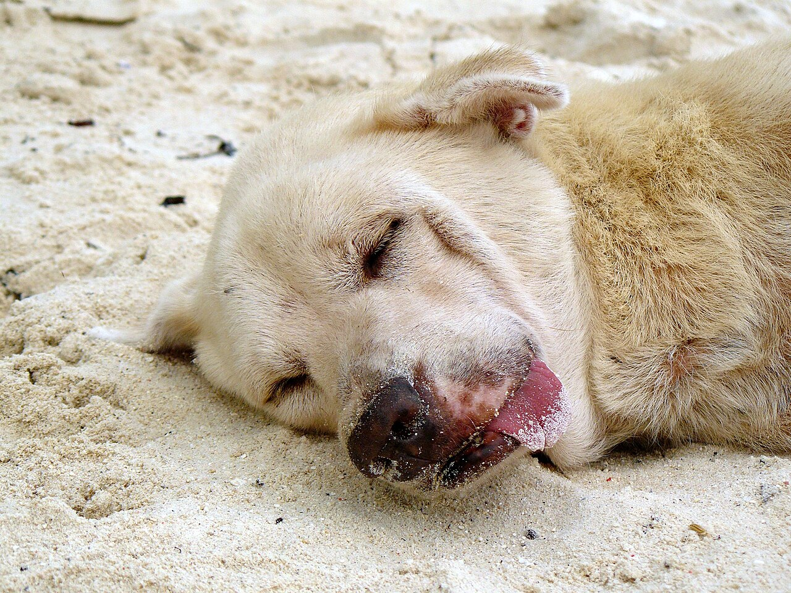

今天以你的不潜水商业观察线为主：上午看 Corella 眼镜猴保护区的保育与票务，午餐在 Dauis 的 Bee Farm 观察农旅、餐饮和零售导流，随后回 Tagbilaran 港乘已确认的船返回宿务，为 Day 13 周六城市观察日和 D14 国际返程保留缓冲。建议提前订私人车 + 司机；巧克力山需要额外长距离转场，改为时间充足且船票允许时的替代线路。
🚐 陆地包车参考
| 车型 | 薄荷岛常见 私人 van（含司机） 全天 ≈1,500–2,500 PHP；或 joiner 拼车团 ≈600–800 PHP/人。 |
| 主线 | Corella 眼镜猴保护区 → Dauis Bohol Bee Farm（午餐与农旅观察）→ Tagbilaran Port。Baclayon 教堂 / 血盟碑只作近港短停备选，Butterfly 中心暂不纳入主线。 |
| 返程船 | OceanJet Tagbilaran → Cebu Pier 1 的具体班次尚未预订；按已出票时间倒排，建议至少提前 60–90 分钟到港。若买不到足够晚的船，先取消 Baclayon，再提前从 Bee Farm 返回，不追赶末班船。 |
🗺️ Day 12 实景
薄荷地标 + 当晚跨海回宿务（实景照片为维基共享资源真实授权图）

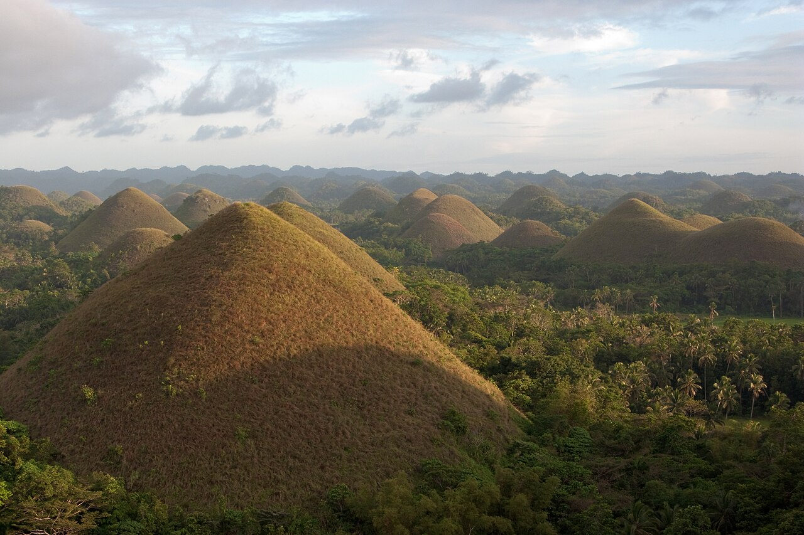
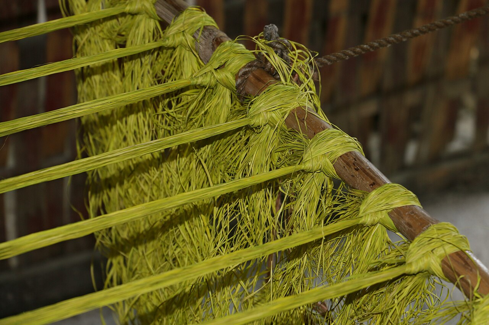
这是为你的“边旅行边理解当地”目标专门保留的一天。今天是周六，不把临时高校拜访或商会见面当成确定项目；主线是比较传统市场、殖民老城、现代商场和 BPO/IT Park四种城市空间，再用一场提前约好的咖啡交流补充当地视角。
🗺️ Day 13 实景 · 城市商业地标
市场、老街、现代零售与 IT Park——今日观察点（实景照片为维基共享资源真实授权图）
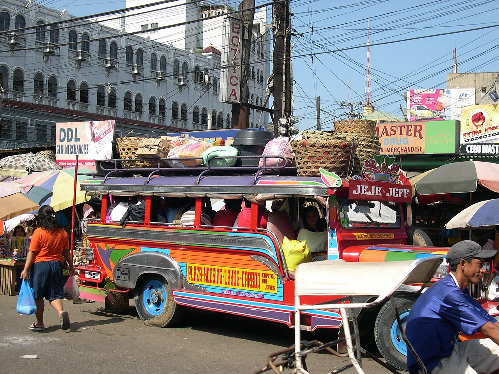

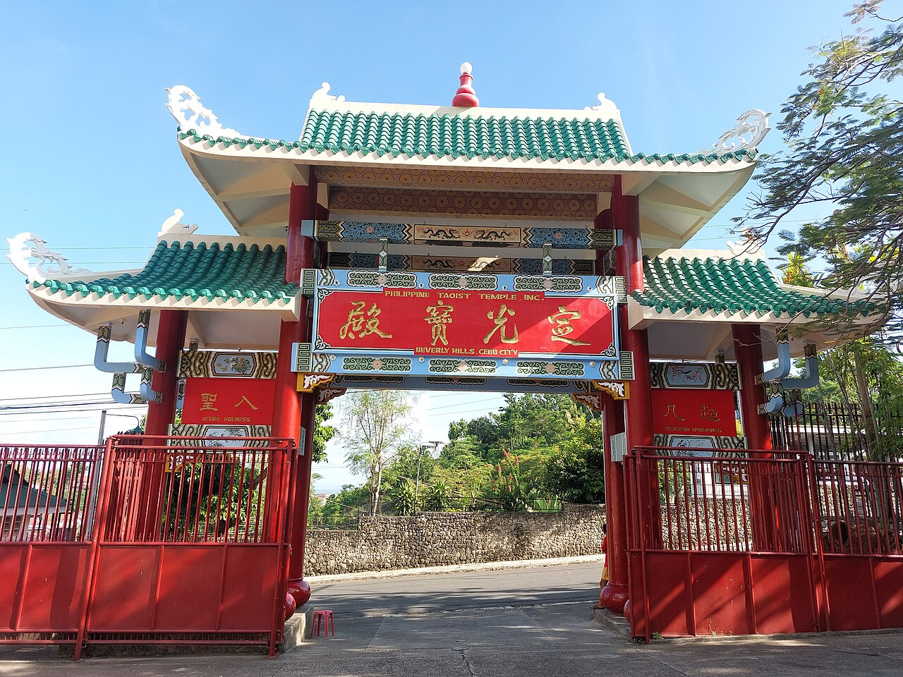
✈️ 返程航班详情（宿务航空 Cebu Pacific Air）
| 06:55 | 宿务 T1 CEB | 🛫 5J564 宿务航空 | 经济舱 | 无餐 | 1h40m |
| 08:35 | 马尼拉 T3 MNL | ⏳ 中转 9h15m — 仅在订单确认行李直挂、航班准点时短暂出机场 |
| 17:50 | 马尼拉 T3 MNL | 🛫 5J114 宿务航空 | 空客321中 | 经济舱 | 无餐 | 2h30m |
| 20:20 | 香港 T1 HKG | 🏁 抵达香港 — 高铁/口岸回深圳 |
🌆 马尼拉 9h15m 中转方案（实际可用市区时间约 3–4 小时）
行程单虽标注行李直挂香港，仍应在宿务值机时再次确认，并拿到 MNL→HKG 登机牌。宿务航空当前建议国际航班提前 4 小时到机场，因此 17:50 起飞应以 13:50–14:00 回到 T3 为目标。只有 CEB→MNL 准点、行李确认直挂、天气和交通正常时才出机场。
方案 A：马尼拉老城半日游（推荐 ⭐）
方案 B：BGC 单片区现代都市体验
- 只用 Grab 打车，不拦路边出租车；上车前核对车牌
- 手机不外露，斜挎包贴身，BGC/王城区白天较安全
- 避免 Quiapo/Divisoria 等拥挤市场区域（扒窃高发）
- 13:00 必须离开市区回机场方向，目标 14:00 前回到 T3；不要把“柜台关闭前赶到”当作计划
- 随身携带护照复印件 + 航班信息页（出机场可能被查）
💰 费用预算汇总（不含机票）
| 对象 | 总费用（RMB） | 构成 |
|---|---|---|
| 🤿 潜水者（小伙伴） | ≈ ¥5,000 上限情景 | 按墨宝 6 潜计算；D5 不潜时应按 4 潜正式报价下调 |
| 🚶 不潜水者（你） | ≈ ¥3,900 | 共同分摊 ¥3,575 + 替代活动 ¥320 |
| 两人合计 | ≈ ¥8,900 上限情景 | 按小伙伴 D5 继续潜水计算；不含机票，可选 AOW 另计 |
| ① 共同费用（两人一起，各摊一半） | |||
|---|---|---|---|
| 项目 | 两人合计（PHP） | 两人合计（RMB） | 每人 |
| 住宿 13 晚（两人一间） | -- | ≈3,100 | ≈1,550 |
| 餐饮 14 天 | ≈16,800 | ≈1,830 | ≈915 |
| 陆路交通（巴士/三轮/包车/摩托） | ≈5,800 | ≈630 | ≈315 |
| 渡轮 3 段（D8/D11/D12） | ≈6,200 | ≈670 | ≈335 |
| 共同门票（鲸鲨/Tumalog/Cambugahay 等） | ≈3,300 | ≈360 | ≈180 |
| 行前准备 + 高铁往返 | -- | ≈560 | ≈280 |
| 共同小计 | -- | ≈7,150 | ≈3,575 |
| ② 潜水者独有（小伙伴） | |||
|---|---|---|---|
| 项目 | 金额（PHP） | 金额（RMB） | 备注 |
| Moalboal 4 潜基础 / 6 潜备选 | 4 潜待报价 / 6 潜 7,200 | 待报价 / ≈783 | D5 是否潜水最迟 D4 晚确认 |
| Siquijor 3 潜 | ≈5,200 | ≈564 | Ustory Divers |
| 潜导小费 | 600–1,200 | ≈100 | 全程约 7–9 潜，按实际次数给 |
| （可选）薄荷 AOW 考证 | -- | +2,400~ | 当前行程未安排课程；如决定参加，须让潜店确认课时并删减薄荷陆地行程 |
| 潜水者独有小计 | -- | ≈1,450 | 不含可选 AOW |
| ③ 不潜水者独有（你） | |||
|---|---|---|---|
| 项目 | 金额（PHP） | 金额（RMB） | 备注 |
| Kawasan 峡谷跳水（含向导装备午餐） | 1,500 | ≈163 | Badian |
| Osmeña Peak 日出（门票+向导） | 200–300 | ≈27 | Dalaguete |
| White Beach 交通/门票 | 300–500 | ≈43 | Basdaku |
| 沙丁鱼浮潜装备租 | 200–250 | ≈24 | Panagsama 岸边 |
| 按摩 SPA（D10 锡基霍尔） | 450–700 | ≈65 | 1.5h Hilot/精油 |
| 不潜水者独有小计 | -- | ≈320 | |
💵 现金准备建议（比索）
岛上小店/三轮车/市场/门票/潜导小费多为现金。两人全程现金约 43,000 PHP，建议共换 45,000 PHP（≈¥4,900） 留缓冲：餐饮 ≈16,000 + 陆路交通 ≈5,800 + 渡轮 ≈6,200 + 门票活动 ≈6,500 + 小费杂费 ≈2,000 + 机动 ≈5,000。渡轮 3 段（≈6,200）单独备零钱，码头售票常只收现金。
可刷卡/预付：住宿 13 晚（≈¥3,100）、潜店项目（墨宝先确认 4 潜报价，D5 加潜待定；锡基霍尔 3 潜参考 ¥564）、Grab 绑卡、商场大额。
兑换策略：国内换少量美元 → 当地市区/商场换比索（机场汇率差）；或银联卡 ATM 取现。锡基霍尔 ATM 少，D8 上岛前在 Dumaguete/宿务取够。
* 以上费用均含参考价或估算成分，实际以付款当日汇率、酒店/船司/潜店报价为准。暂按 1 RMB ≈ 9.2 PHP 换算。按小伙伴墨宝 6 潜计算，两人参考上限约 ¥8,900（不含机票与机动金）；若 Day 5 不潜，需用 4 潜报价重新计算。机票和酒店为动态定价，出行前请在航空公司、酒店平台及对应运营方确认并预订。
✅ 出发前 72 小时 · 最终核对清单
✅ 逐项打钩，避免到了口岸才发现缺东西
- eTravel 已提交并打印/截图二维码（etravel.gov.ph ↗）
- 护照有效期 ≥ 6 个月，复印件 + 电子版已存（与原件分开放）
- 往返机票 + 全程酒店订单已存（手机 + 打印各一份）
- 国际机票已确认（HKG→MNL→CEB 同一订单；在 MNL 提取行李过海关后交 Transfer Desk）
- 各段酒店已核对：宿务市区近南巴士站首晚、Moalboal 3 晚、Oslob 2 晚、Siquijor 3 晚、Bohol、宿务末晚
- 潜店已联系：Moalboal 先确认 D3–4 的 4 潜报价，并约定 D5 两潜最晚确认时间；Siquijor 确认 3 潜；薄荷 AOW 当前未排入日程
- 旅行险 + 潜水险已购（含医疗撤离 + 天气取消）
- 电话卡 / eSIM 已备；Grab、Google Maps 离线地图已装
- 美元现金 + 银联卡；不随身带大量现金，两人分散存放
- 常用药 + 防晒(reef-safe) + 晕船药 + 防水袋已打包
- 两人互换证件照片 / 订单备份（云端 + 各自手机）
- 锡基霍尔交通已决定：优先预约司机/包车；如自驾，已确认有效摩托车驾照、官方英文翻译、租车保险和两顶头盔